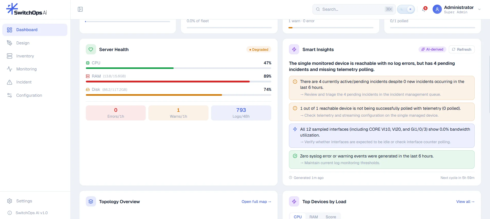
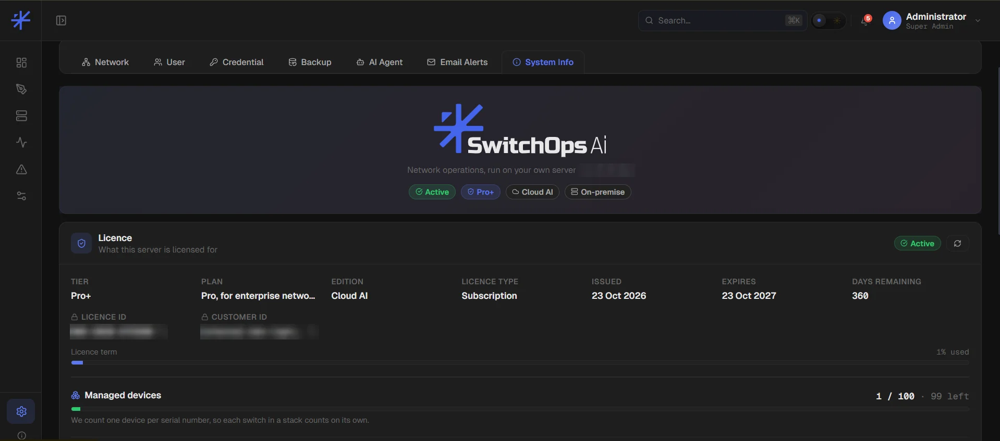
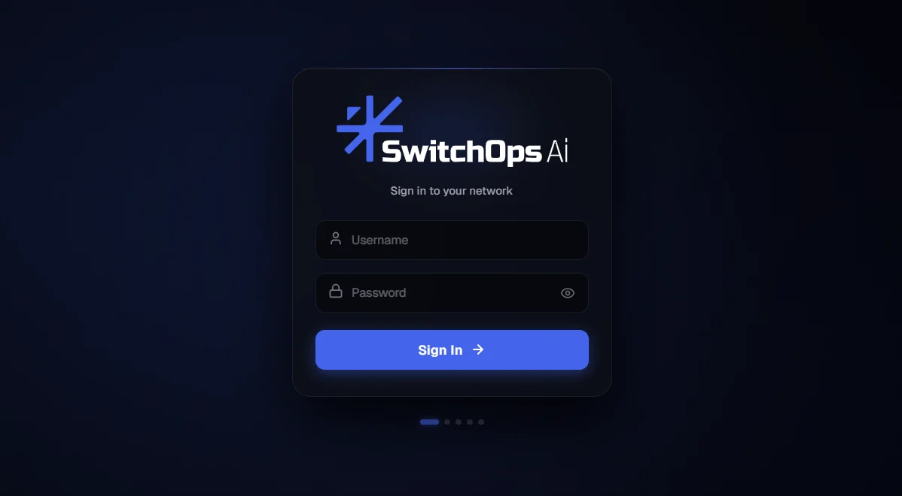

booting switchops-tech...
initializing network intelligence...
systems operational ✓
SwitchOps AI finds the root cause of network faults, warns you about capacity problems before users feel them, and makes every configuration change reversible. It runs on your own infrastructure, and with the Local AI edition, your network data never leaves your premises.
Add a device and SwitchOps AI verifies access, prepares it for monitoring and maps its neighbours on a live topology view.
Device health, interfaces, bandwidth, PoE, optics and IP address usage in one place, with alert thresholds you control and live device logs.
Incidents open automatically. One click gathers the evidence and returns a clear root cause with recommended next steps.
See where device resources and link utilisation are heading over the next 7 and 30 days.
Make changes through guided forms, with a restore point taken before every change.
Screens from SwitchOps AI running on its own server.



SwitchOps AI verifies access, prepares each device for monitoring and maps your topology.
Alerts and incidents are raised automatically. Diagnose any of them in one click.
Push VLAN, interface and security settings from guided templates, with a restore point before every change.
A live map of how your devices connect
Who is using which address, and pool usage
Power budget and per-port usage
Transceiver health at a glance
Live and historical interface traffic
Device logs collected centrally
Device CLI access from the web interface
Ready-made templates for routing, switching and security
Device configuration and platform backups
Separate Super Admin, Network Engineer, Operator and Read-only roles
Every user has a defined role. Only authorised engineers can change or roll back configuration, and key actions are recorded in an audit log.
Device credentials and configuration backups are stored encrypted on your server.
No change is applied without a restore point, and risky changes are flagged before they run.
SwitchOps AI runs inside your network. With the Local AI edition, no network data leaves your premises.
Supported cloud providers: Anthropic Claude, Google Gemini, OpenAI and DeepSeek.
How cloud AI requests are handled is set out in our Terms and Conditions and Privacy Policy.
Built with Llama. All trademarks belong to their respective owners.
Plans scale from small offices to large enterprise networks, with terms from three months to five years. Licences activate offline, so SwitchOps AI works in fully isolated environments.
Licences are issued under the SwitchOps AI Terms and Conditions. Read our Privacy Policy.
Server requirements, the install wizard, first sign-in, every screen, licensing and fixes for common problems, in one searchable guide you can also save as a PDF.
For teams that run their own network and want faster fault diagnosis, early warning on capacity, and safe configuration changes, without handing their data to someone else.
Cisco IOS and IOS-XE routers and switches, including stacks. Wireless monitoring is available as an add-on. More vendors are on the roadmap.
No. Most tasks use guided forms and templates. CLI access is still available when you want it.
The Local AI edition runs an AI model on your own server. The Cloud AI edition connects to the provider you choose.
Not with the Local AI edition, including licence activation. The Cloud AI edition needs internet access only for AI requests.
One Ubuntu Server 24.04 LTS machine on your network, physical or virtual. The Local AI edition needs at least 4 CPU cores and 8 GB of RAM; the Cloud AI edition needs 2 cores and 4 GB. Our team handles deployment and onboarding. See the full requirements.
We don't try to out-feature the global vendors. We focus on running inside your boundary, working offline, and support from local engineers.
The engineers behind SwitchOps AI also design and build custom web applications, client portals and integrations that connect your software to your network and hosting. Smart HR and Smart Auditor are next in our product pipeline.
Discuss a software project →See it on your own network. We'll arrange a guided proof of concept.